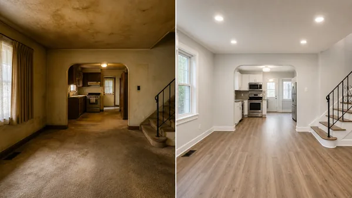

Clarify the professional lane
Attorney, CPA, realtor, lender, insurance, appraisal, and trade decisions stay with the appropriate licensed or engaged professional.
Situation guide
For professionals who need the house-side work documented, scoped, and coordinated without replacing their role.

Professionals often see the downstream effects of a disorganized inherited home: missing receipts, unclear item decisions, no photos, confusing cleanout bills, rushed repair choices, and executors who are overwhelmed.
Legacy Defenders helps organize the property side of the estate so the professional can stay focused on their actual role. We coordinate practical work, produce records, and keep boundaries plain.
Start here
Attorney, CPA, realtor, lender, insurance, appraisal, and trade decisions stay with the appropriate licensed or engaged professional.
Belongings, access, repairs, provider chaos, storage, shipping, family decisions, and missing records often block the professional workflow.
Photos, scopes, invoices, receipts, item logs, donation records, storage notes, and provider updates should be organized from the start.
How we help
Support the executor with practical house-side coordination while preserving the professional's role.
Prepare records packages with photos, item logs, receipts, scopes, provider notes, and open questions.
Coordinate local providers for cleaning, moving, storage, disposal, maintenance, and approved repairs.
Use transparent pricing and written scopes; any formal referral or affiliate arrangement needs proper review and disclosure.
Professional support is usually scoped around the executor's practical bottleneck and the records the professional needs to see.
| Cost category | Planning range | What it covers |
|---|---|---|
| Referral or fit conversation | $0 | Short conversation to understand whether the executor needs practical property support, records, or a home visit. |
| Estate Math Home Visit | $250 credit | Property and belongings walkthrough when the executor wants a practical assessment and first plan. |
| Detailed estate management scope | $750-$2,500+ | Written phase plan, provider needs, quote comparison support, item workflow, funding-readiness records, and professional questions. |
| PA tax / estate records package | $750-$3,500 | Organized invoices, receipts, photos, item logs, donation/sale records, project notes, and open questions for attorney/CPA/tax preparer review. |
| Provider coordination | Project based or managed-cost percentage | Scheduling, scopes, photos, invoices, and completion records for cleaning, moving, storage, disposal, lawn, repair, or maintenance providers. |
These are planning ranges, not quotes. Exact pricing depends on condition, access, volume, urgency, provider availability, authority, and approved scope.
Confirm that the need is practical house-side support, not legal, tax, lending, brokerage, insurance, appraisal, or licensed-trade advice.
Help the executor gather photos, property risks, bills, belongings issues, and provider needs into one practical scope.
Deliver records, photos, invoices, item logs, provider notes, and open questions so the professional can review within their lane.
Photos, receipts, invoices, item records, donation/sale notes, provider scopes, and project timeline.
Approved scopes, family item decisions, storage/shipping choices, provider approvals, and open issues.
Contacts, schedules, invoices, completion photos, exceptions, and follow-up tasks.
First safe step
The first call helps decide what you can do yourself, what should wait, and whether the $250 credited Estate Math Home Visit makes sense.
Start With A Free Call